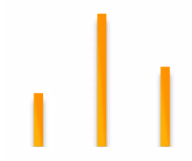

How It Works
1. Schedule Pickup → 2. Collection → 3. Recycling → 4. Certification

E-Wastage Management In LPU
According to our analysis in a semester (6th months) maximum 10 computers becomes e waste in LPU, 1000 different types of lights, 15 fans, 7-8 heaters, 3 or 4 Air Conditioners, 1 or 2 refrigerators in apartments, nearly 10 coolers, 3 or 4 projectors and some other types of printers, machines, photocopy machines nearly 6 to 8.
E waste transportation expenses and labour expenses
Overview of E-waste management in LPU

According to our analysis, LPU will get nearly Rs. 10,000 for selling the e-waste in one half of the year, LPU gives e-waste transportation and labour cost nearly Rs. 25,000. For getting E-Waste pollution free certificate LPU facing nearly Rs. 15,000 losses. They were transporting these E-wastes in nearby state in Haryana facing these much lossed.
Starting a e-waste plant in LPU
Overview of starting a e-waste plant in LPU
Cost of machines
E waste recycling depends on multiple factors. E waste machineries starting around 10 lakh rupees to 20 crore rupees.
Total expenses in a semester
If Lpu choose Repose machines it cost around 35 Lakhs. All operating cost including labour raw materials, power etc cost around Rs 35,000.
Other expenses
Apart from this LPU need land, building, labour, electricity, raw materials, machine maintenance... etc. Electricity cost and machine maintenance based on the choice of the machines.
Visiting a e-waste recycle company
LPU visit a e-waste company they will get a proper idea about recycling plant.
Suggestion and Challenges
Overview of challenges and what they can do
1. LPU can start a e-waste plant in near LPU ground. It is much more safe place inside the campus to as compared to planting a e-waste plant in nearby buildings. That place keeps distance from other buildings.
2.According to our analysis LPU facing huge lose in sending e-waste in Haryana. LPU not earning a single profit from e-waste selling. Because LPU need a e-waste pollution free certificate.
3.For starting a e-waste LPU need to visit a e-waste recycle company to get proper idea how to handle a e-waste recycle plant.
4.According to our analysis LPU have less amount of e-waste produce in last 6 months.
5.Planting e-waste in LPU will face huge losses forever and continuously because buying recycling machineries, labour, transportation.... etc face huge amounts of money losses as compared to sending e-waste in Haryana.
6.So we recommend sending e-waste to Haryana is better because LPU need to setup a small e-waste plant need to spend 35 Lakhs for machines minimum if they choose repose machines only.
Conclusion
Overall view point
It is concluded that e-waste is a relatively new segment in the global removal. It is also the lowest growing segment LPU in discarded was problem in the LPU is largely ignored or misunderstood. So the question needs to be addressed before any solutions can be effective. E-waste improper disposal of any number of electronic devices. These devices include computers, televisions, cell phones, or most other electronic equipment. Consumers in developed nations are quick to replace their devices because of continuous technological advances.